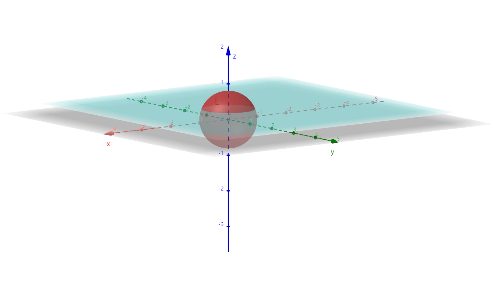

§10.4 对面积的曲面积分（I类）
引例：曲面形状物体的质量：M=μ⋅S
f(x,y,z)=λ→0limf(ξi,ηi,ζi)ΔSi=M
一、定义
Σ 是分段光滑的空间曲面，f(x,y,z) 在 Σ 上有界。
- 任意分割 ΔSi
- 任意取点 (ξi,ηi,ζi)
若 limλ→0∑i=1nf(ξi,ηi,ζi)ΔSi 存在，则称此式为 f(x,y,z) 在 Σ 上的曲面积分（I类曲面积分）
记为 ∬Σf(x,y,z)dS
f(x,y,z)=1 时，∬Σ1⋅dS=S（空间曲面 Σ 的面积）
二、性质
-
线性
∬Σaf(x,y,z)+bg(x,y,z)dS=a∬Σf(x,y,z)dS+b∬Σg(x,y,z)dS
-
可加性
∵Σ∴∬Σf(x,y,z)dS=Σ1+Σ2=∬Σ1f(x,y,z)dS+∬Σ2f(x,y,z)dS
-
对称性
- Σ 关于 xOy 面对称，Σ上、Σ下
∬ΣfdS={2∬Σ上dS0f(x,y,z)=f(x,y,−z)f(x,y,z)=−f(x,y,−z)
- Σ 关于 yOz 面对称，Σ前、Σ后
∬ΣfdS={2∬Σ前dS0f(x,y,z)=f(−x,y,z)f(x,y,z)=−f(−x,y,z)
- Σ 关于 xOz 面对称，Σ左、Σ右
∬ΣfdS={2∬Σ右dS0f(x,y,z)=f(x,−y,z)f(x,y,z)=−f(x,−y,z)
轮换对称性
Σ:x2+y2+z2=R2（球面）
∬Σx2dS=∬Σy2dS=∬Σz2dS=31∬Σ(x2+y2+z2)dS=3R2∬ΣdS=3R24πR2
三、计算
转化为二重积分
定理：Σ 分段光滑，z=z(x,y)(x,y)∈Dxy，Dxy 是 Σ 在 xOy 面上的投影，f(x,y,z) 在 Σ 上连续。
∬Σf(x,y,z)dS=∬Dxyf(x,y,z(x,y))1+zx2+zy2dxdy
Σ:x=x(y,z)(y,z)∈Dyz：
∬Σf(x,y,z)dS=∬Dyzf(x(y,z),y,z)1+xy2+xz2dydz
Σ:y=y(z,x)(z,x)∈Dzx：
∬Σf(x,y,z)dS=∬Dxyf(x,y(z,x),z)1+yx2+yz2dzdx
空间曲面的形心
(x,y,z) 落在对称面上（若存在）
- xˉ=S∬ΣxdS，∬ΣxdS=xˉS
- yˉ=S∬ΣydS，∬ΣydS=yˉS
- zˉ=S∬ΣzdS，∬ΣzdS=zˉS
例题
-
I=∬Σ(x+z)dS，Σ:x2+y2+z2=R2(R>0) 位于 z=a(a>0) 以上的部分

解：z=R2−x2−y2(x,y)∈Dxy，Dxy:x2+y2≤R2−a2
zx=R2−x2−y2x
zy=−R2−x2−y2y
I=∬Dxy(x+R2−x2−y2)R2−x2−y2Rdxdy=∬DxyR2−x2−y2Rx+R∬Dxydxdy=R⋅π(R2−a2)
-
I=∬Σ(x2+y2)dS，Σ:x2+y2+z2=2(x+y+z)
解：Σ 具有轮换对称性，(x−1)2+(y−1)2+(z−1)2=3
I=32∬Σ(x2+y2+z2)dS=34∬Σ(x+y+z)dS=34(xˉ+yˉ+zˉ)⋅4πr2=34×(1+1+1)×4π×3=48π